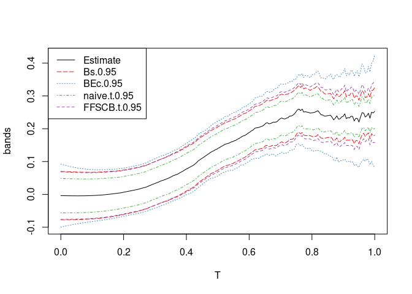
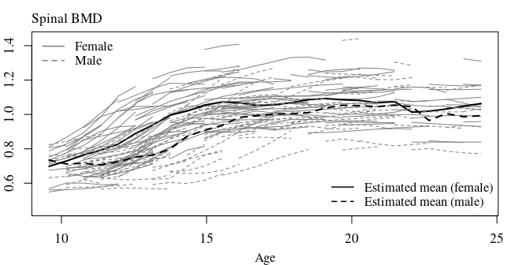
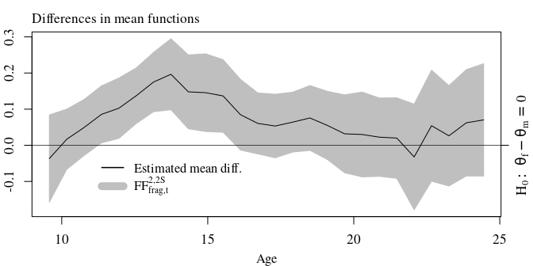

Description
The R package ffscb allows to compute simultaneous confidence bands for function-valued parameters (e.g. for mean functions μ = {μ(t) : t ∈ [0,1]}). The band shapes are constructed under the fairness constraint of false positive rate balance which allows to distribute the total false positive rate α ∈ (0,1) over partitions 0 = a0 < a1 < … < ap = 1 of the function domain [0,1].1 This leads to band shapes that are interpretable both globally and locally. Globally (i.e. over the total domain [0,1]) the simultaneous confidence band provides a (1−α) × 100% coverage probability. Locally (i.e. over sub-intervals [aj − 1,aj] ⊆ [0,1]) the simultaneous confidence band provides a (1−α(aj−aj − 1)) × 100% coverage probability.
The statistical theory and methodology are described in:
Fast ‘n’ fair simultaneous confidence bands for functional parameters as introduced in the paper Fast and Fair Simultaneous Confidence Bands for Functional Parameters (arXiv:1910.00131) by Dominik Liebl and Matthew Reimherr.The R-codes of the R package
ffscbcan be found at the GitHub repo https://github.com/lidom/ffscb
Installation
devtools::install_github("lidom/ffscb")Small example based on artifical data
library("ffscb")
# Generate a sample
p <- 200
N <- 80
grid <- make_grid(p, rangevals=c(0,1))
mu <- meanf_poly(grid,c(0,.25))
names(mu) <- grid
cov.m <- make_cov_m(cov.f = covf_nonst_matern, grid=grid, cov.f.params=c(2, 1/4, 1/4))
sample <- make_sample(mu,cov.m,N)
# Compute the estimate, hat.mu, and its covariance, hat.cov.mu
hat.mu <- rowMeans(sample)
hat.cov <- crossprod(t(sample - hat.mu)) / N
hat.cov.mu <- hat.cov / N
# Compute the tau-parameter
# I.e., the 'roughness parameter function needed for the FFSCB-bands
hat.tau <- tau_fun(sample)
# Make and plot confidence bands
b <- confidence_band(x = hat.mu,
cov.x = hat.cov.mu,
tau = hat.tau,
df = N-1,
type = c("FFSCB.t", "Bs", "BEc", "naive.t"),
conf.level = 0.95,
n_int = 4)
plot(b)
Legend for band-type:
| Argument | Description |
|---|---|
FFSCB.t |
Fast ‘n’ fair simultaneous confidence band of Liebl and Reimherr (2022+) |
Bs |
Bootstrap based simultaneous confidence band similar to Degras (2011) |
BEc |
Simultaneous confidence band of Choi and Reimherr (2018) |
naive.t |
Naive pointwise confidence band (not a simultaneous confidence band) |
Example using real functional data
The following code replicates the sports biomechanics real data example of our paper Liebl and Reimherr (2022+). First, we read in and plot the data.
library("ffscb")
data("Biomechanics")
## Data
slct_EC <- grepl(pattern = "Extra_Cush_", x = colnames(Biomechanics))
slct_NC <- grepl(pattern = "Normal_Cush_", x = colnames(Biomechanics))
##
grid <- Biomechanics[,1]/100 # Grid in [0,1]
EC_mat <- Biomechanics[,slct_EC] # Torque curves when running with extra cushioned running shoes
NC_mat <- Biomechanics[,slct_NC] # Torque curves when running with normal cushioned running shoes
Dff_mat <- EC_mat - NC_mat # Difference curves
N <- ncol(Dff_mat) # Sample size
## Plot
width <- 7
height <- 2.5
mar <- c(4.1, 4.1, 4.1, 1.1)
##
layout(mat = matrix(c(1:3), nrow=1, ncol=3), widths = c(1, 1, 1))
##
par(family = "serif", ps=13, cex.main=1.3, cex.lab=1.25, cex.axis=1.3, font.main = 1, mar=mar)
matplot(y = EC_mat, x = grid*100, lwd=.5, col=gray(.25), type="l", lty=1,
ylab="N m / kg", xlab = "% of Stance Phase", main="Extra Cushioned\nRunning Shoe")
matplot(y = NC_mat, x = grid*100, lwd=.5, col=gray(.25), type="l", lty=1,
ylab="N m / kg", xlab = "% of Stance Phase", main="Normal Cushioned\nRunning Shoe")
matplot(y = Dff_mat, x = grid*100, lwd=.5, col=gray(.5), type="l", lty=1, ylim = c(-0.25, max(Dff_mat)),
ylab="N m / kg", xlab = "% of Stance Phase", main="Difference Curves\n(Extra - Normal)")
lines(y = rowMeans(Dff_mat), x = grid*100)
legend("bottomright", legend = expression(paste("Estimated mean")), col="black", lty=1, bty="n", lwd = 1.5, cex=1.3)
Next, we need to compute the estimate of the mean function hat.mu and the estimate of its covariance function hat.cov.mu. From the latter, we can compute the estimate of the roughness parameter hat.tau.
## Computing the estimates
hat_mu <- rowMeans(Dff_mat)
hat.cov <- crossprod(t(Dff_mat - hat_mu)) / (N-1)
hat.cov.mu <- hat.cov / N
hat.tau <- tau_fun(Dff_mat) Now, we have everything in place to compute the fair simultaneous 95% confidence band that balances the false positive rate α = 0.05 by allocating the equal shares α(1/n_int) to each of the here n_int=8 sub-intervalls [0,12.5%], [12.5%,25], …, [87.5%,100%].
Note: The paper treats also the case of balanced false positive rates over arbitrary partitions of the domain, but this feature is not yet implemented in our package.
alpha.level <- 0.05
n_int <- 8
## Over each subinterval [0, 12.5%], [12.5%, 25%], ... , [87.5%, 100%]
## we compute a 99.375% simultanouse confidence interval:
(1 - alpha.level*(1/n_int)) * 100
#> [1] 99.375
## Computing the confidence bands
b <- confidence_band(x = hat_mu,
cov = hat.cov.mu,
tau = hat.tau,
df = N-1,
type ="FFSCB.t",
conf.level = 1-alpha.level,
n_int = n_int)A quick and dirty plot can be generated by plot(b). The following code, however, replicates the plot of our paper Liebl and Reimherr (2022+):
FF8_t_band <- b[,-1]
FF8_crit_value_u <- (FF8_t_band[,1] - hat_mu)/sqrt(diag(hat.cov.mu))
## Plots
width <- 7
height <- 3.125
cex <- .9
cexs <- 0.95
##
layout(mat = matrix(c(1,2,3,3), nrow=2, ncol=2),
heights = c(1, 1), # Heights of the two rows
widths = c(1, 1.25)) # Widths of the two columns
par(family = "serif", ps=13, cex.axis=1.05, font.main = 1)
par(mar=c(3.1, 2.1, 2, 1.1))
plot(y=hat.tau,x=grid*100, type="l", main = "", xlab = "", ylab="")
mtext(text = expression(paste("Roughness estimate ",hat(tau))), 3, line = 0.4, adj = 0, cex=cex)
##
par(mar=c(3.1, 2.1, 2, 1.1))
matplot(y=cbind(FF8_crit_value_u), x=grid*100, col="black", lty=c(2,1), type = "l",
main="", xlab = "", ylab="", lwd=c(1.5,1), ylim=c(min(FF8_crit_value_u),4.1))
abline(v=c( 0:8 * 100/8), col="gray", lwd=1.3)
mtext(text = expression(paste("Fair adaptive critical value function ", hat(u)[alpha/2]^"*")), 3, line = 0.4, adj = 0, cex=cex)
mtext(text = "% of Stance Phase", 1, line = 2.25, cex=cexs)
##
par(mar=c(3.1, 4.1, 3.1, 2.1))
matplot( y = b, x = grid*100, type="n", ylim=c(min(FF8_t_band),0.28),
ylab="", xlab = "", main="")
polygon(x=c(grid*100,rev(grid*100)), y=c(FF8_t_band[,2],rev(FF8_t_band[,1])), col = gray(.75), border = gray(.75))
abline( h = 0, lwd=0.7)
abline(v=c( 0:8 * 100/8), col="gray")
lines( y = hat_mu, x = grid*100, col=1, lty=1)
axis(4, at = 0, labels = expression(H[0]:~theta==0))
legend(x=50, y=0.3, legend = c(expression(paste("Estimated mean")),
expression(FF[t]^8)), y.intersp=1.05, bg="white", box.col = "white",
lty=c(1,1), lwd = c(1.5,10), col=c("black", gray(.75)), cex =cexs, seg.len=2)
mtext(text = "% of Stance Phase", 1, line = 2.25, cex=cexs)
mtext(text = "N m / kg", 2, line = 2.5, cex=cex)
mtext(text = "95% Simultaneous Confidence Band (SCB)\n99.375% SCB over each subinterval", 3, line = 0.4, cex=cex)
text(x = 12.5/2, y = .2, labels="99.375% SCB", srt=90)
box()
Example using real fragmentary functional data
Our method even works in the case of fragmentary functional data, where it is impossible to compute estimates of the total covariance function. The following code replicates the framentary functional data example of our paper Liebl and Reimherr (2022+). First, we read in and plot the data.
suppressPackageStartupMessages(library("tidyverse"))
library("ffscb")
data(Fragments)
slct_Y_f <- grepl(pattern = "Y_f.", x = colnames(Fragments))
slct_X_f <- grepl(pattern = "X_f.", x = colnames(Fragments))
##
slct_Y_m <- grepl(pattern = "Y_m.", x = colnames(Fragments))
slct_X_m <- grepl(pattern = "X_m.", x = colnames(Fragments))
##
Y_f_mat <- as.matrix(Fragments[,slct_Y_f])
X_f_mat <- as.matrix(Fragments[,slct_X_f])
##
Y_m_mat <- as.matrix(Fragments[,slct_Y_m])
X_m_mat <- as.matrix(Fragments[,slct_X_m])
grid <- seq(from = min(c(X_f_mat, X_m_mat), na.rm=TRUE),
to = max(c(X_f_mat, X_m_mat), na.rm=TRUE),
len = nrow(X_m_mat))
width <- 7
height <- 3.8
cex <- 1
cexs <- 0.95
mar <- c(3.25, 2.1, 2.1, 2.1)
##
par(mfrow=c(1,1), family = "serif", ps=13, cex.main=.99, font.main = 1, mar=mar)
matplot(y=cbind(Y_f_mat, Y_m_mat),
x=cbind(X_f_mat, X_m_mat), type="n", xlab="", ylab="", ylim=c(.45,max(cbind(Y_f_mat, Y_m_mat),na.rm=T)))
matlines(y=Y_f_mat, x=X_f_mat, lty=1, col=gray(.5))
matlines(y=rowMeans(Y_f_mat, na.rm = TRUE), x=grid, lty=1, col="black", lwd = 2)
matlines(y=Y_m_mat, x=X_m_mat, lty=2, col=gray(.5))
matlines(y=rowMeans(Y_m_mat, na.rm = TRUE), x=grid, lty=2, col="black", lwd = 2)
legend("topleft", legend = c("Female", "Male"),
lty = c(1,2), col = c(gray(.5), gray(.5)), lwd=1.5, bty="n", cex = cexs)
legend("bottomright", legend = c("Estimated mean (female)",
"Estimated mean (male)"),
lty = c(1,2), col = c("black", "black"), lwd=1.5, bty="n", cex = cexs)
mtext(text = "Spinal BMD", 3, line = 0.4, adj = 0, cex=cex)
mtext(text = "Age", 1, line = 2.25, cex=cexs)
Next, we need to compute the estimates of the mean functions hat_mu_f and hat_mu_m and the estimates of the covariance functions hat_cov_f and hat_cov_f. Due to the fragmentary nature of the data, we can only estimate the covariance functions at a band along the diagonal of the covarianc functions.
hat_mu_f <- rowMeans(Y_f_mat, na.rm = TRUE) # mean function estimate (female)
hat_mu_m <- rowMeans(Y_m_mat, na.rm = TRUE) # mean function estimate (male)
##
hat_cov_f <- cov_fragments(Y_f_mat) # covariance function estimate (female)
hat_cov_m <- cov_fragments(Y_m_mat) # covariance function estimate (male)
##
width <- 7.1
height <- 3.7
par(mfrow=c(1,2), family = "serif", ps=13, cex.main=.99, font.main = 1, mar=c(4.1, 4.1, 2.1, 2.1))
image(hat_cov_f, col=gray(seq(0,1,len=32)), xlab = "Age", ylab = "Age"); box()
mtext(text = "Female", 3, line = 0.4, adj = 0, cex=cex)
image(hat_cov_m, col=gray(seq(0,1,len=32)), xlab = "Age", ylab = "Age"); box()
mtext(text = "Male", 3, line = 0.4, adj = 0, cex=cex)
Based on hat_cov_f and hat_cov_f, we can compute the covariance estimate hat_cov_mat of the two-sample mean difference hat_mu_f - hat_mu_m. Based on hat_cov_mat, we can compute the roughness parameter hat.tau; even though, hat_cov_mat can only be computed along a band around the diagonal.
N_f <- ncol(X_f_mat) # Number of female subjects
N_m <- ncol(X_m_mat) # Number of male subjects
##
# number of observations X_i(t)*X_i(s), i=1,...,N_f, for each (t,s) grid point
n_f_ts <- n_ts(Y_f_mat); n_f <- diag(n_f_ts)
# number of observations X_i(t)*X_i(s), i=1,...,N_m, for each (t,s) grid point
n_m_ts <- n_ts(Y_m_mat); n_m <- diag(n_m_ts)
##
hat_cov_mat <- ( (n_f_ts - 1) * hat_cov_f + (n_m_ts - 1) * hat_cov_m ) / (n_f_ts + n_m_ts -2)
diag_cov <- diag(hat_cov_mat)
diag_cov_x <- diag_cov / (n_f + n_m)
##
tau <- cov2tau_fun(hat_cov_mat)
##
b <- confidence_band_fragm(x = c(hat_mu_f - hat_mu_m),
diag.cov.x = diag_cov_x,
tau = tau,
df = min(c(n_f,n_m)) - 1,
type = "FFSCB.t",
conf.level = (1-0.05),
n_int = 2)
slct_FFSCB_t <- grepl(pattern = "FFSCB.t", colnames(b))
hat_mu_diff <- b[,1]
FFSCB_t_band <- b[,slct_FFSCB_t] #FFSCB_res$band[,-1]
width <- 7
height <- 3.8
cex <- 1
cexs <- 0.95
mar <- c(3.25, 2.1, 2.1, 2.1)
##
par(mfrow=c(1,1), family = "serif", ps=13, cex.main=.99, font.main = 1, mar=mar)
matplot(y=cbind(FFSCB_t_band), x=grid, type="n", xlab="", ylab="")
polygon(x=c(grid,rev(grid)),
y=c(FFSCB_t_band[,2],rev(FFSCB_t_band[,1])), col = gray(.75), border = gray(.75))
abline( h = 0, lwd=0.7)
lines( y = hat_mu_diff, x = grid, col=1, lty=1)
axis(4, at = 0, labels = expression(H[0]:~theta[f]-theta[m]==0))
legend(x=11, y=-0.01, legend = c(expression(paste("Estimated mean diff.")), expression(FF["frag,t"]^"2,2S")),
lty=c(1,1), bty="n", lwd = c(1.5,10), col=c("black", gray(.75)), cex =cexs, seg.len=2)#x=10.5,y=-0.11
mtext(text = "Differences in mean functions", 3, line = 0.4, adj = 0, cex=cex)
mtext(text = "Age", 1, line = 2.25, cex=cexs)
More detailes about this real-ata application can be found in our paper Liebl and Reimherr (2022+).
Using a standardized function domain [0,1] is, for course, without loss of generality.↩︎